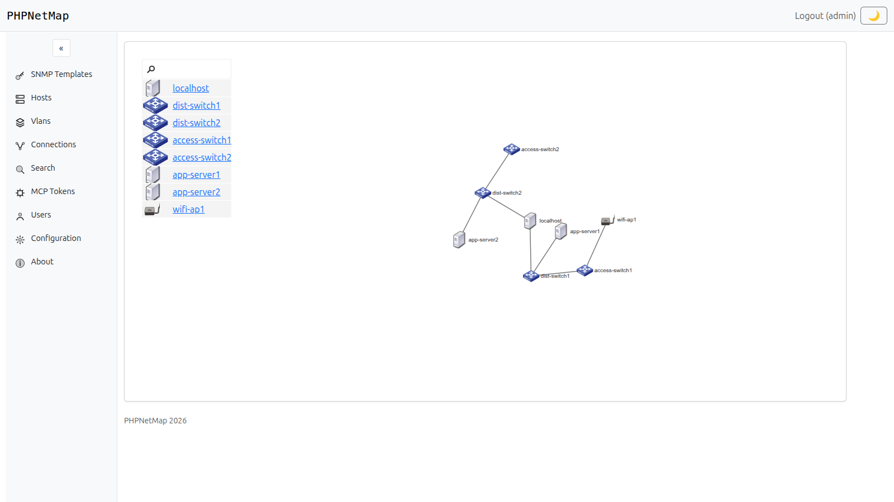
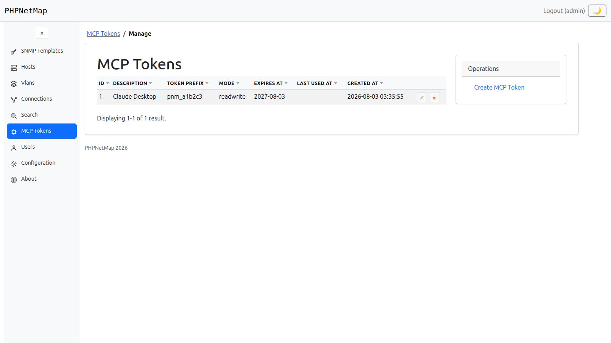
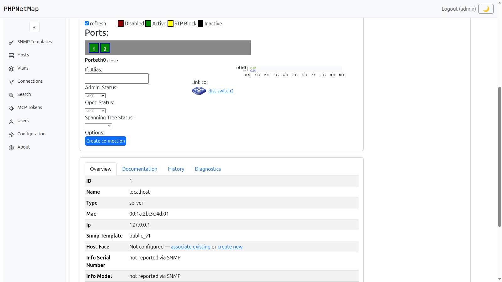
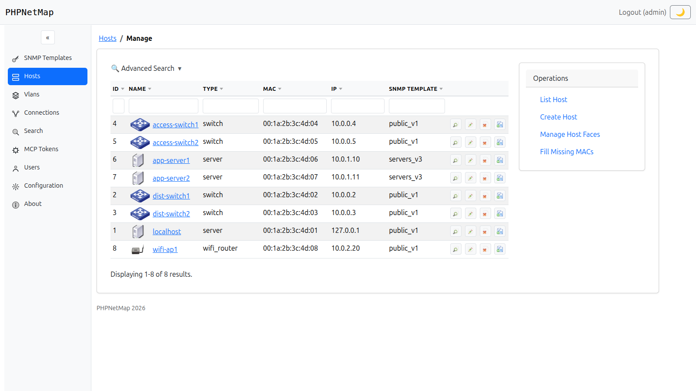
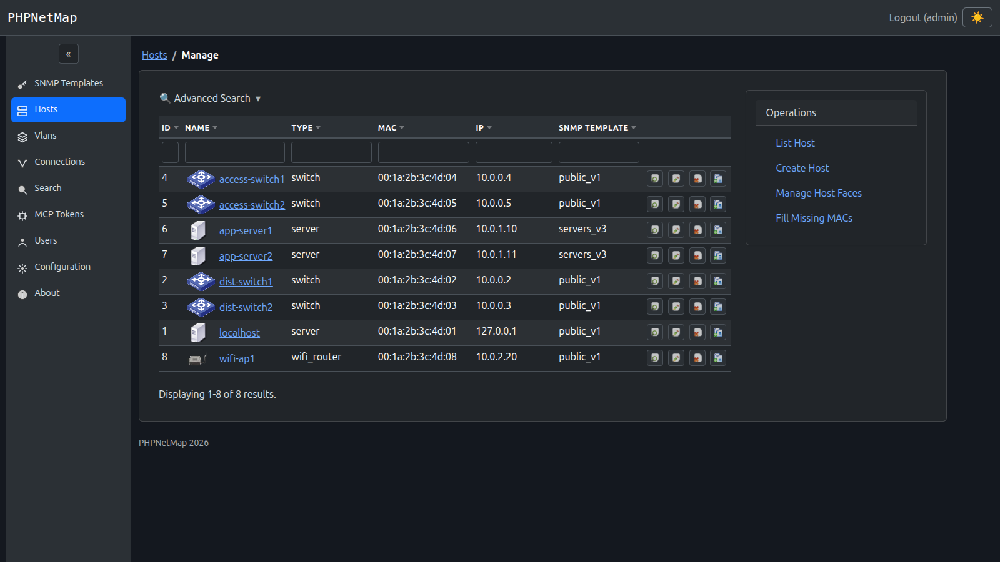

PHPNetMap discovers your topology straight from switch CAM and ARP tables, tracks port and VLAN status in real time, and exposes it all to AI agents through a built-in MCP server.

If any of this sounds familiar, an automated map pays for itself fast.
The moment someone re-patches a cable, your inventory is already wrong — and nobody notices until something breaks.
Knowing every switch exists isn't the same as knowing how they're actually wired together, port by port.
CAM tables, ARP tables and port status live inside each device — until something pulls them out and makes them queryable.
PHPNetMap ships a built-in MCP server exposing 25+ tools across hosts, connections, VLANs, SNMP templates and live diagnostics. Point Claude — or any MCP-compatible client — at it, generate a token, and ask it to map a new switch, audit VLAN usage, or trace a broken link, in plain language.

Built for real SNMP gear, not a toy demo.
A D3-powered map built straight from switch CAM and ARP tables — no manual diagramming, ever.
See admin/operator status and STP state per port, and flip ifAdminStatus or set ifAlias straight from the browser.
Tag, name and color every VLAN so it's instantly recognizable across the whole map.
25+ tools for AI agents, with per-token read-only or read-write control.
See how it works →SemVer-tagged amd64/arm64 images on ghcr.io, with latest always pointing at the newest release.
Rebuilt on Bootstrap 5 — light/dark theme, sortable grids, and an advanced search on every list.
All screenshots below are from the current release — nothing here is a mockup.

Click into any port to see its admin/operator status, Spanning Tree state, live traffic, and who's on the other end of the cable — with a one-click shortcut to start a new connection from it.

Every resource list — hosts, VLANs, connections, SNMP templates — ships with a collapsible advanced search and sortable, uppercase column headers, all rebuilt on Bootstrap 5.

A theme toggle lives right in the header and remembers your preference across sessions — no flash of the wrong theme on reload.
The Docker image ships everything it needs — Apache, PHP, SNMP tooling, SQLite. Nothing to install by hand.
Multi-arch, built for both amd64 and arm64.
docker pull ghcr.io/marcelofmatos/phpnetmap:latestSet your own admin password on first run.
docker run -d -p 80:80 \
-e ADMIN_PASSWORD=yourpassword \
ghcr.io/marcelofmatos/phpnetmapVisit your server, log in as admin with the password you set above, and start adding hosts.
http://localhostThe repository includes a full STANDALONE_INSTALLATION_GUIDE.md — a step-by-step walkthrough for installing PHPNetMap on a bare Apache/PHP/SQLite server, no containers involved. Docker is still the recommended path, but the standalone guide is there if you need it.
Clone the repo, pull the Docker image, or point an AI agent at it — pick your starting point.